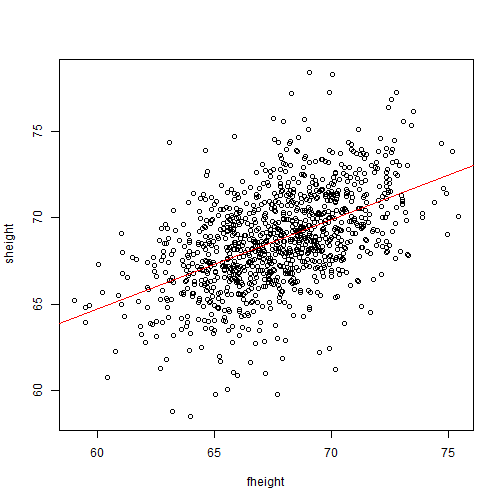

This presentation details the shiny application developed for assignment 'Developing Data Products' course of Coursera Data Science course.
The function of this application is to predict the height of the son based on the entered fathers height.
Linear regression model is used as the prediction algorithm.
---
## Objective
This presentation details the shiny application developed for assignment 'Developing Data Products' course of Coursera Data Science course.
The function of this application is to predict the height of the son based on the entered fathers height.
Linear regression model is used as the prediction algorithm.
--- .class #id
## Requirements
### Data Source
* father.son dataset from library 'UsingR'
### R packages:
* shiny
* UsingR
Preliminary look at the father.son dataset reveals that there are duplicates in sheight variable.
which(table(father.son$sheight)>1)
## 70.90129 72.34482
## 848 975
The above measurements are removed from the dataset so as to not bias the regression model.
---
```{r, echo=FALSE, warning=FALSE, message=FALSE}
library(UsingR)
library(shiny)
data("father.son")
```
## Cleaning Data Set
Preliminary look at the father.son dataset reveals that there are duplicates in sheight variable.
```{r, echo=TRUE}
which(table(father.son$sheight)>1)
```
The above measurements are removed from the dataset so as to not bias the regression model.
Looking at the dataset, there is a visible correlation between the fathers and sons height.

---
```{r, echo=FALSE}
#Duplicate son heights values are identified
shdup <- as.numeric(names(which(table(father.son$sheight)>1)))
#Dataset with no duplicates for son heights
fsnodup <- father.son[!(father.son$sheight %in% shdup),]
```
## Exploratory Analysis
Looking at the dataset, there is a visible correlation between the fathers and sons height.
```{r, echo=FALSE, fig.align='center'}
plot(fsnodup)
fitlm <- lm(sheight~fheight, data = fsnodup)
abline(lm(fitlm), col='red')
```
Please link below to access app
---
## Shiny App
Please link below to access app
https://klevd.shinyapps.io/dataproducts/
| Objective | 1 |
|---|---|
| Requirements | 2 |
| Cleaning Data Set | 3 |
| Exploratory Analysis | 4 |
| Shiny App | 5 |
| Table of Contents | t |
|---|---|
| Exposé | ESC |
| Full screen slides | e |
| Presenter View | p |
| Source Files | s |
| Slide Numbers | n |
| Toggle screen blanking | b |
| Show/hide slide context | c |
| Notes | 2 |
| Help | h |